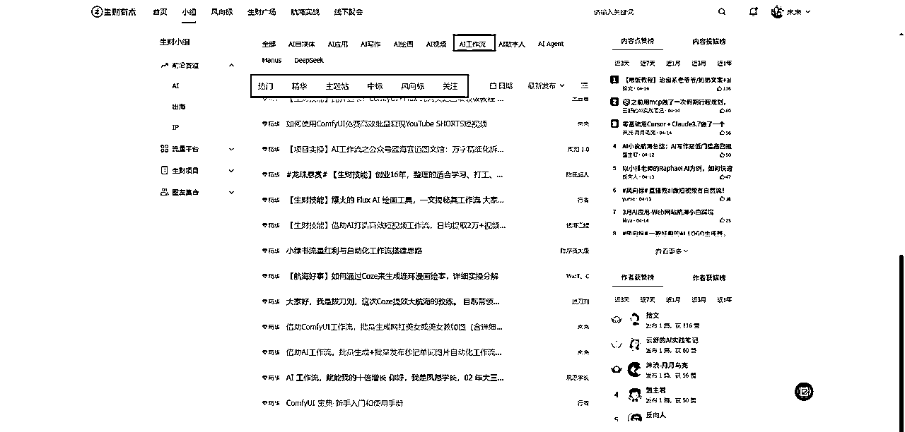

来源：https://aigcstudy.feishu.cn/docx/WExNdeDYPoq8GJxaoOXcpGeqnvg
大家好，我是来来，核心有3三个标签“写书，培训，设计，传术师”。
首先是写书，来来深耕AI绘画赛道2年，作为AI畅销书作者，已售AI图书近万册。已出版书籍《一本书读懂AI绘画》《一本书读懂AIGC提示词》《一本书读懂Deepseek》，待出版书籍《一本书读懂AI视频》。
其次是培训，来来担任过生财有术6次AI航海教练（AI绘画4次+AI工作流2次），在三节课等多个平台发布过多种AI类课程。来来是长江商学院特邀讲师。并且当过10年大学设计老师，来来教练在AI训练营中带领4000+学员从0到1成功变现，并带领50+全球企业通过AI降本增效。
然后是设计，来来拥有22年设计经验，创立电商设计公司12年，拥有丰富商业设计实战积累，而且阿里巴巴集团颁发过设计银奖。
最后来来作为生财有术资深传术师，有以下四篇AI工作流相关的精华帖，欢迎大家学习。
精华帖1（借助ComfyUI工作流，批量生成网红美女）https://t.zsxq.com/4LSmj
精华帖2（借助AI工作流，批量生成秒记单词图片自动化工作流）https://t.zsxq.com/mQvxK
精华帖3（深度使用ComfyUI免费批量制作AI短视频工作流 ）https://t.zsxq.com/BEnmt
精华帖4（没显卡免费使用ComfyUI工作流）https://t.zsxq.com/GMMBt
来来想和各位新加入生财有术的圈友说，虽然来来现在有着光鲜亮丽的履历和成绩，但是我和很多人一样，并不是一开始就走在AI这条前途无量的道路上，作为一个师范专业专科毕业的大专生，人生并非坦途，而是经历过一路的披荆斩棘，一路的打怪升级，在不断试错中找到方向。在这一路的人生迭代升级过程中，生财有术扮演了人生导师的角色，在我焦虑和迷茫的时候，一次次把我从泥潭中拖出来，进入正轨。曾经做了10年老师的来来，很愿意把生财有术陪伴我成长的过程与你分享，希望你能通过生财有术的陪伴，找准自己的人生方向，拒绝焦虑，做好自己，找到适合自己的生财之路。请相信你自己，来来在23年加入生财有术之前，也是没有任何AI经验的小白，最终也能通过生财有术逆袭成为AI畅销书作者，那么请相信自己，你也可以做到。来来将用亲身经历，详细告知生财有术新人，怎么打破下面的5大差距？
信息差是指我们在获取和理解信息方面的差距。信息差往往决定了我们对项目了解程度和决策的质量。信息差等同于=风口，意味着你知道，别人不知道。信息差在各个行业无所不在，所谓的隔行如隔山，即使是你自己熟知的行业都有很大可能你所不知道的信息差，更别说你不了解的行业存在更多的信息差。伴随着互联网的出现以及各种AI的加持，现在信息已经非常透明，但是优质的信息差还是很难及时获取，所以这时候我们需要一个可靠优质的信息来源，那就不得不提生财有术的风向标这个产品。以下所有实操案例均使用生财有术官网电脑端截图，手机端操作原理相同。
圈友发表的每个领域最新风向，基本等同于信息差，风向标里面大部分都是风口浪尖的优质信息差，俗称的风口。
中标选项卡，代表着生财有术官方已经从全部发表的信息差中，做了一次筛选和判断。认为这是一个优质靠谱的信息差，圈友可以抓紧执行，抓住风口，赚到自己的第1块钱。所以作为新手的圈友您无需具备筛选和分析信息差的能力，执行即可。
关注选项卡，仅展示你关注的圈友发布出来的信息差。
来来2023年初加入生财有术收集到如下图的一条风向标，来来当时通过AI绘画制作壁纸，数倍赚回来了生财有术的门票。现在回头看，虽然当时来来是AI新手，但是也不妨碍赚钱，毕竟在当时来来借助AI的能力，出来的壁纸效果也很惊艳。而且Midjourney真的是一个非常容易上手的AI绘画软件，想通过AI绘画变现的AI新手圈友，强烈建议先从Midjourney学起。
最后四张图片是23年4月给客户制作的AI壁纸。原图是竖版手机壁纸，版权原因来来做了部分裁切。
认知差指的是个人在认知能力上的差距。不同人对同一问题的看法和理解可能存在差异，这会影响到我们对问题的把握和决策的准确性。为了缩小认知差距，我们可以通过广泛阅读、多角度思考和交流讨论来开拓自己的思维，提高自己的认知能力。这时候就该生财有术的生财小组出场了。
一款聚集同一类文章的产品，举例可以快速聚焦的学习AI领域，其中的一个细分领域比如AI视频的所有知识，形成属于自己的认知差，快速的让自己成为某个细分领域的专家。来来加入生财有术的两年时间也是通过这里学习了大量关于AI领域的知识，包括但不限于AI绘画，AI视频，AI数字人，AI工作流，现在来来专注用AI工作流自动化批量生成内容，并将内容用于国内电商以及海外内容出海。

首先来来加入生财有术之前仅仅是听说过AI，但是没有很好的渠道去系统学习。2023年3月8号来来正式加入生财有术后的，接下来的一个季度来来疯狂学习AI绘画领域的知识，如左图所示来来把学习到的AI绘画知识分门别类搭建了一个飞书知识库。如右图所示来来现在已经有20+个的AI细分知识库。这些内容可以让你快速的和同行拉开认知差。
来来可以从AI小白变成AI专家，我相信圈友肯学肯做，你也可以。
执行差指的是将想法和计划付诸实施的能力差距。有时候，我们可能虽然有很好的计划和想法，但在付诸行动上存在困难。为了提高执行能力，我们应培养自律性和坚持性，制定具体的目标和计划，并付诸实施，掌握时间管理的技巧，提高自己的执行效率。新手可以通过生财有术的精华贴快读抹平信息差。
生财圈友在生财有术发表的文章，被生财团队认可非常有价值，就会评选为精华帖，还会奖励龙珠或者龙珠碎片，龙珠等积分可以兑换或者部分抵扣一些有价值的产品或者服务，比如航海家门票、生财有术社群门票、亦仁大佬的咨询等。
机缘巧合，2023年5月份到6月份来来在生财有术发表过如下图所示的几篇AI绘画文章，被一个出版社编辑看到，邀请来来写作AI绘画的相关书籍，2023年7月来来开启图书写作，进过几个月的三审三校和印刷，2024年1月来来2本AI图书正式出版。并且有幸在北京中国国际展览中心举办了新书发布会。来来从此多了一个作家的人生标签，完成AI小白到AI畅销书作者的蜕变。
学习差指的是在知识和技能方面的差距。这种差距可能来自于教育背景、学习方法等方面。为了克服学习差距，我们应不断学习和积累知识，可以通过读书、参加培训课程、与专家学者交流等方式来提升自己的学习能力和专业知识。新手可以通过生财有术的航海实战快速建立学习差。
航海实战可以理解为对某一个具体领域或者某个项目的21天实操训练营，首先生财有术官方会从这个领域的选择靠谱的拿到结果的专家组成教练天团，担任航海实战教练，生财教练会合作一起编写一份翔实的航海实战手册，然后志愿者会拉一个专门的航海群，圈友根据教练编写的航海手册可以从0-1学习整整21天，在这21天的学习过程中，可以直接在微信群请教教练，教练会免费帮你答疑解惑。而且还有很多和你一样的圈友一起学习同一个航海，可以互相交流实操和变现心得。
资源差指的是社会和职场圈层差异。受困于地域限制，我们可能没有办法接触到更广阔的资源或者人脉圈子，导致我们就算有万般技能，也难有施展的地方。为了弥补圈层差距，我们应主动扩展社交圈子，参与各类社交活动和行业交流，与不同背景的人建立联系，获取更多的机会和资源。新手可以通过线下聚会快速的链接到该行业的人脉资源。完成0-1的生财圈友可以付费加入航海家链接更多拿到结果的人。
生财有术的圈友可以自行发起某个主题的聚会，用来快速链接人脉。线下聚会分为四种，学习局，娱乐局，运动局。航海家专属。
航海家中聚焦了一批在各个行业拿到结果的生财有术圈友，航海家是需要额外付费加入的。
最后来来
每一位刚进入生财有术的伙伴，都可能在不同的成长阶段，以下是一些建议。
——来来
AI畅销书作者|AI工作流专家｜生财有术6次航海教练｜生财有术资深传术师